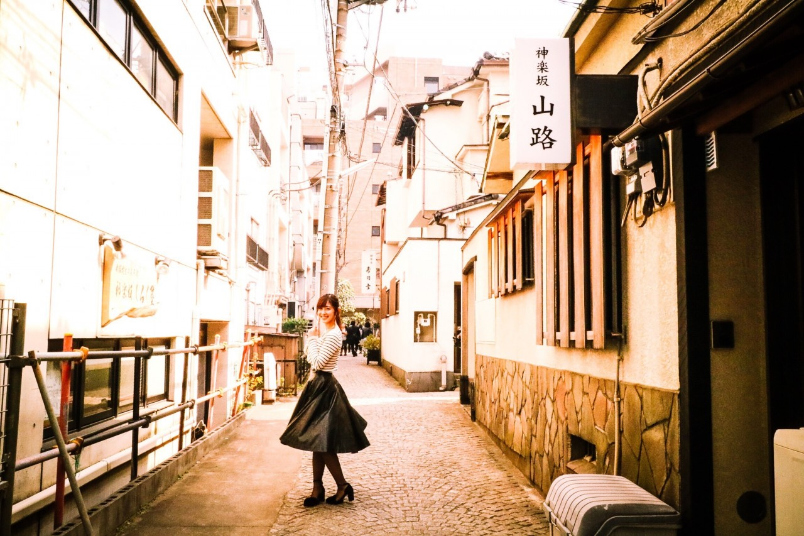

| 2017/03 31 Fri | 斎藤ちはる 大学二年生ラストの日 |
ちはるーむへようこそ
今日のちはるーむではみり愛がちはるーむへようこそをおちょくってきた事に対しての会議を開きました。
みり愛め〜！！٩(◦`~´◦)۶笑
今日はオーケストラの日。
み(3)み(3)にいい(1)日、もしくは
み(3)み(3)にいち(1)番、という
語呂合わせから付いたそうです。
オーケストラ、小学生の頃に
お父さんと観に行ったな〜
小学生の頃の記憶あまり無い方なのに
覚えているってそれくらい印象的だったんだね！
この手気になるね
今日は3/31ということは年度末。
2度目のプレミアムフライデーでしたが
皆さんお仕事大変でしたよね...
１年間、お疲れ様でした。
私も、今日が大学二年生最終日です。
大学に入学して早２年！
あっという間に感じます
↑入学式の日
今より少し幼いかな？
そして無事、明日からは
大学三年生になることが出来ます！
ちゃんとご報告出来て良かった( ;o; )
マネージャーさんの配慮、
家族や友人の協力もあり、
卒業単位も今の所順調に取れています。
本当に感謝でいっぱいです。
また応援してくださっている皆さん、
いつも支えてくださり有難うございます。
ちーちゃんの両立している姿に
勇気をもらっているよ！と
言ってくれる皆さん。
ちーちゃんが頑張ってるから自分も頑張る！と
言ってくれる学生の皆さん。
無理しなくて大丈夫だからね。と
心配してくれる皆さん。
そう言ってくれる事が本当に嬉しいです。
その言葉に私も頑張れます。
でも睡眠時間や仕事の時間との兼ね合いで
辛い時や大変な時もあるし、
あ〜今日は行きたくないな〜
っていう日も正直あります。笑
だけど自分が決めた事だからやり遂げたいし
4年で大学を卒業したいというのはずっと考えていることなので
「諦めたらそこで試合終了ですよ」という言葉を胸に、
これからも両立を図っていきたいと思います。
テストや学校があるので
他のみんなよりは日中にある収録に参加出来なかったり
少しだけ寂しい思いを今後もさせてしまうこともあるかと思いますがヽ(；；)丿
大学三年生の私も、
応援宜しくお願い致します！！

------------------------------------------------♡
♬ ChihaMusic
「歩み」GReeeeNさん
この曲に元気付けられる。
勇気も出て来るし
頑張ろうって思えるね。
本当素敵な曲作るな〜
どの曲も好き。
"歯をくいしばって 顔を上げて
「なにくそ！負けるか！」と 心決め
少しずつ前へ 進めばいい"
何か悔しい事があった時には
この歌詞のことを思い出せば
何にでも負けない気がするね。
大学二年生ラストの曲。
明日は久しぶりに大阪で開催される
全国握手会です！！
なんとおいでシャンプーぶり。
5年ぶりだそうで！
二期生は初めてだね〜
琴子と一緒のレーンです☺︎
皆さん心からお待ちしていますヽ(；；)丿
おやすみ
斎藤ちはる